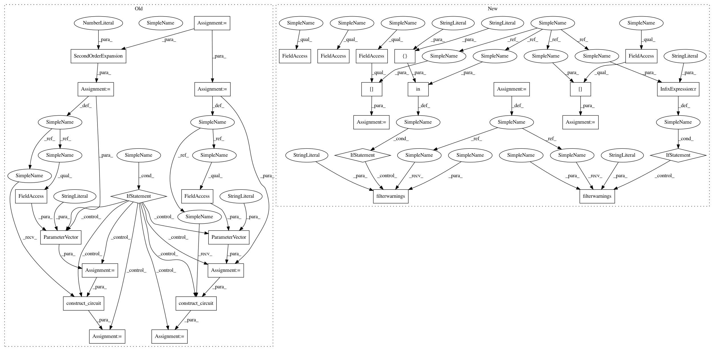

97c9871e334ae1e98c4eba025cf352e70f6a6701,test/aqua/test_vqc.py,TestVQC,test_save_and_load_model,#TestVQC#Any#,242
Before Change
aqua_globals.random_seed = self.seed
backend = BasicAer.get_backend("qasm_simulator")
num_qubits = 2
optimizer = SPSA(max_trials=10, save_steps=1, c0=4.0, skip_calibration=True)
feature_map = SecondOrderExpansion(feature_dimension=num_qubits, depth=2)
var_form = RYRZ(num_qubits=num_qubits, depth=3)
// convert to circuit if circuits should be used
if use_circuits:
x = ParameterVector("x", feature_map.feature_dimension)
feature_map = feature_map.construct_circuit(x)
theta = ParameterVector("theta", var_form.num_parameters)
var_form = var_form.construct_circuit(theta)
// set up algorithm
vqc = VQC(optimizer, feature_map, var_form, self.training_data, self.testing_data)
// sort parameters for reproducibility
if use_circuits:
After Change
backend = BasicAer.get_backend("qasm_simulator")
optimizer = SPSA(max_trials=10, save_steps=1, c0=4.0, skip_calibration=True)
data_preparation = self.data_preparation[mode]
wavefunction = self.ryrz_wavefunction[mode]
if mode == "wrapped":
warnings.filterwarnings("ignore", category=DeprecationWarning)
// set up algorithm
vqc = VQC(optimizer, data_preparation, wavefunction, self.training_data, self.testing_data)
if mode in ["circuit", "library"]:
vqc._feature_map_params = self._sorted_data_params
vqc._var_form_params = self._sorted_wavefunction_params
quantum_instance = QuantumInstance(backend,
shots=1024,
seed_simulator=self.seed,
seed_transpiler=self.seed)
result = vqc.run(quantum_instance)
np.testing.assert_array_almost_equal(result["opt_params"],
self.ref_opt_params, decimal=4)
np.testing.assert_array_almost_equal(result["training_loss"],
self.ref_train_loss, decimal=8)
self.assertEqual(1.0, result["testing_accuracy"])
file_path = self.get_resource_path("vqc_test.npz")
vqc.save_model(file_path)
self.assertTrue(os.path.exists(file_path))
loaded_vqc = VQC(optimizer, data_preparation, wavefunction, self.training_data, None)
// sort parameters for reproducibility
if mode in ["circuit", "library"]:
loaded_vqc._feature_map_params = self._sorted_data_params
loaded_vqc._var_form_params = self._sorted_wavefunction_params
else:
warnings.filterwarnings("always", category=DeprecationWarning)
loaded_vqc.load_model(file_path)
np.testing.assert_array_almost_equal(
loaded_vqc.ret["opt_params"], self.ref_opt_params, decimal=4)
In pattern: SUPERPATTERN
Frequency: 3
Non-data size: 31
Instances
Project Name: Qiskit/qiskit-aqua
Commit Name: 97c9871e334ae1e98c4eba025cf352e70f6a6701
Time: 2020-04-30
Author: jules.gacon@googlemail.com
File Name: test/aqua/test_vqc.py
Class Name: TestVQC
Method Name: test_save_and_load_model
Project Name: Qiskit/qiskit-aqua
Commit Name: 97c9871e334ae1e98c4eba025cf352e70f6a6701
Time: 2020-04-30
Author: jules.gacon@googlemail.com
File Name: test/aqua/test_vqc.py
Class Name: TestVQC
Method Name: test_save_and_load_model
Project Name: Qiskit/qiskit-aqua
Commit Name: 97c9871e334ae1e98c4eba025cf352e70f6a6701
Time: 2020-04-30
Author: jules.gacon@googlemail.com
File Name: test/aqua/test_vqc.py
Class Name: TestVQC
Method Name: test_vqc_callback
Project Name: Qiskit/qiskit-aqua
Commit Name: 97c9871e334ae1e98c4eba025cf352e70f6a6701
Time: 2020-04-30
Author: jules.gacon@googlemail.com
File Name: test/aqua/test_vqc.py
Class Name: TestVQC
Method Name: test_vqc_minibatching_no_gradient_support